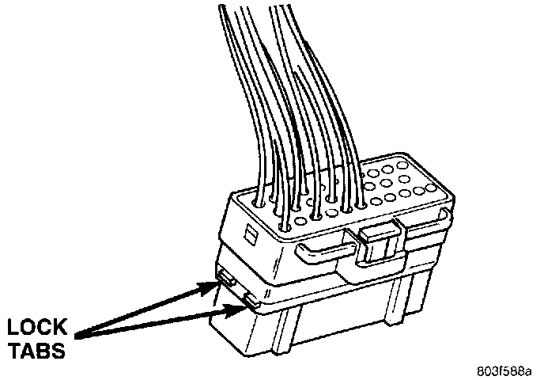
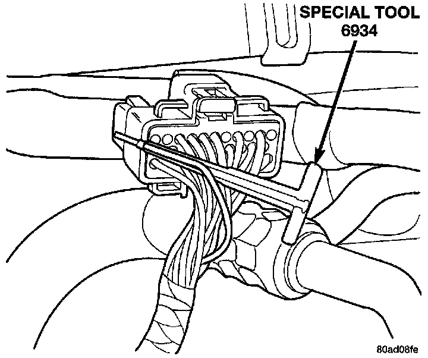
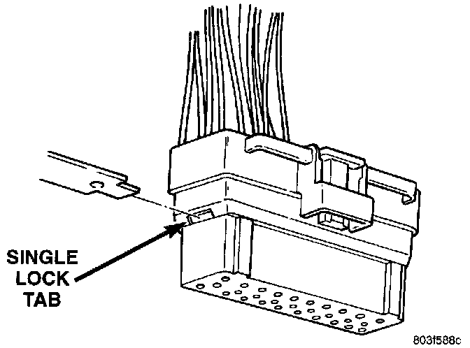

Terminal/Connector Repair-Thomas and Betts Connectors
1. Disconnect the battery.2. Disconnect the connector from its mating half/component.
Thomas And Betts Connector Lock Release Tabs:

3. Push in the two lock tabs on the side of the connector.
Removing Wire Terminal:

4. Insert the probe end of Special Tool 6934 into the back of the connector cavity.
5. Grasp the wire and Special Tool 6934 and slowly remove the wire and terminal from the connector.
6. Repair or replace the terminal.
7. Install the wire and terminal in the connector. Fully seat the terminal in the connector.
Single Lock Tab:

8. Push in the single lock tab on the side of the connector.